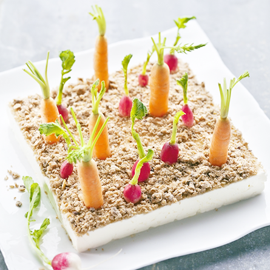

Les ingrédients
- 8 radis
- 8 mini-carottes
- 8 brins de persil
- 300g de fromage frais
- 5 crackers multigrains
La recette
- Pour cette recette il te faut un cadre carré en inox d'environ 12 x 12 cm, puis utilise un verre pour faire les formes ! Tu es prêt à planter ton mini-potager à croquer !
- Commence par nettoyer soigneusement les radis et les carottes en les passant sous l’eau.
- Mets les crackers dans un sac en plastique puis écrase-les grossièrement avec une cuillère ou le fond d’un verre pour obtenir des petites miettes.
- Pose le cadre sur une assiette plate ou sur un plat et remplis le de fromage frais. Ensuite, lisse le dessus avec une spatule.
- Recouvre le fromage avec les crackers émiettés. Cela ressemble à la terre du potager ! Enlève soigneusement le cadre.
- Plante radis, carottes et brins de persil comme dans un véritable potager. C'est prêt pour la dégustation ! Tu es désormais un vrai jardinier !